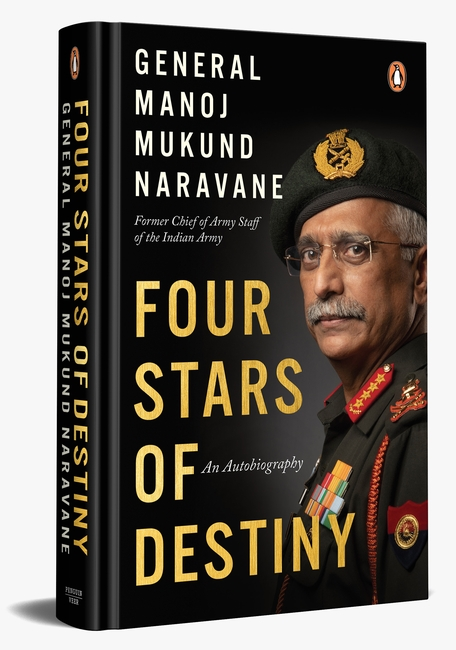

|

|
Four Stars of Destiny
By- Manoj Mukund Naravane
In 2019, General Manoj Mukund Naravane became the twenty-eighth Chief of the Indian Army. His journey to the highest echelons of the Indian Armed Forces was not short of events both exciting and challenging.
In his memoirs, General Naravane recounts the myriad experiences that shaped his character, from his childhood to his years in the Services and beyond. From his first encounter with the Chinese as a young officer in Sikkim to dealing with them in Galwan when he was Chief, from daily incidents of firing across the LC to implementing a ceasefire with Pakistan, General Naravane takes us through his distinguished career spanning over four decades that saw him serve in all corners of the country. This is a specialist’s take on the things that make our forces unique, particularly those that deal with the planning and conduct of operations—the raison d’être of the Army.
In Four Stars of Destiny, General Naravane shares lessons on leadership and management with universal applicability, and gives us an insider’s perspective on what else needs to be done to make the Armed Forces a more potent instrument of national power, ready to meet the challenges of the twenty-first century. General Naravane’s life and career illustrate the strength and resilience required to overcome adversity, and the importance of family and maintaining a work-life balance—something that has been lost sight of in today’s 24×7 work culture.
|
Four Stars of Destiny
By- Manoj Mukund Naravane
Charlie Reade looks like a regular high school kid, great at baseball and football, a decent student. But he carries a heavy load. His mom was killed in a hit-and-run accident when he was ten, and grief drove his dad to drink. Charlie learned how to take care of himself—and his dad. Then, when Charlie is 17, he meets a dog named Radar and his aging master, Howard Bowditch, a recluse in a big house at the top of a big hill, with a locked shed in the backyard. Sometimes strange sounds emerge from it.
Charlie starts doing jobs for Mr. Bowditch and loses his heart to Radar. Then, when Bowditch dies, he leaves Charlie a cassette tape telling a story no one would believe. What Bowditch knows, and has kept secret all his long life, is that inside the shed is a portal to another world.
King’s storytelling in Fairy Tale soars. This is a magnificent and terrifying tale about another world than ours, in which good is pitted against overwhelming evil, and a heroic boy – and his dog – must lead the battle.
|
|